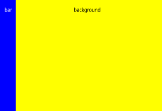

Screen provides native rendering APIs that use the hardware blitter to move data from one area of memory to another without involving the CPU.
Graphics processing requires a lot of memory management and movement of areas of memory. To do this efficiently, bit blitter hardware elements are often supported. Bit blitters are aware of the different display formats, and memory layouts that can be used, and so rather than moving bytes, blitters move pixels. Blitters can also provide certain graphics capabilities such as scaling, pixel format conversion, and transparency blending.
A blit operation copies a rectangular region of pixels from a source buffer to a destination buffer. You'd likely use a blit operation to achieve such things as the following:
Your application has access to the blitter through the following rendering APIs provided by Screen API:
When your application explicitly calls these native blit API functions, Screen uses the blitter that's specified by the blit-config parameter in your graphics configuration file (e.g., graphics.conf).
Generally, the main steps you need to do in your application to perform blit operations are:
This is what holds the buffer or buffers that your application will render to. A render target can be a stream, a pixmap or a window. You can also use a combination of these targets, depending on your application. If you're performing a screen_blit(), you're copying pixels from a source buffer to a destination buffer. Therefore, you'll likely have at least two render targets created in your application.
The code follows a very similar set of procedures whether you're using a pixmap, a window, or a stream as your render target. In the following example, we use a pixmap as the source for the blit operation, and a window as the destination.
...
screen_context_t screen_ctx;
screen_pixmap_t screen_pix;
...
screen_create_pixmap(&screen_pix, screen_ctx);
...
or ...
screen_context_t screen_ctx;
screen_window_t screen_win;
...
screen_create_window(&screen_win, screen_ctx);
Now that you've created your targets, you must set the appropriate properties on these targets. At a minimum, you should set the usage on each. You must set the SCREEN_PROPERTY_USAGE property to include SCREEN_USAGE_NATIVE when you're using your buffers for blit and fill operations. For example, here's what the code might look like for setting a pixmap, and a window:
...
int pusage;
int psize[2] = { -1, -1 };
...
/* Indicate that the buffer associated with this render target will be written to,
and used in, native API operations such as screen_blit() or screen_fill().
*/
pusage = SCREEN_USAGE_WRITE | SCREEN_USAGE_NATIVE;
/* Note that if you're using a pixmap as your off-screen render target and you
eventually wish to make at least parts of the pixmap buffer visible, then you
must set the usage and buffer size to be compatible with those of the window
you'll be using to display your pixmap-rendered content.
*/
screen_set_pixmap_property_iv(screen_pix, SCREEN_PROPERTY_USAGE, &pusage);
screen_set_pixmap_property_iv(screen_pix, SCREEN_PROPERTY_BUFFER_SIZE, psize);
...
int usage = SCREEN_USAGE_WRITE | SCREEN_USAGE_NATIVE;
screen_set_window_property_iv(screen_win, SCREEN_PROPERTY_USAGE, &usage);
...
And finally, you'll need to create one, or more, buffers for your render targets. For example:
...
screen_create_pixmap_buffer(screen_pix);
/* Use a double-buffered window. This allows your application to work on a frame
* while Screen is updating the framebuffer with previous changes.
*/
screen_create_window_buffers(screen_win, 2);
...
Once you've created your render targets, you'll want to make sure you have access to the buffer(s) of your render targets. These are the areas that you'll be copying from, and writing to. You'll want to retrieve the SCREEN_PROPERTY_RENDER_BUFFERS of your render target(s). This property will give you the handle to the buffers that are available for rendering.
Unlike pixmaps, windows and streams can have multiple buffers available for rendering. For example:
...
screen_buffer_t screen_pbuf;
screen_buffer_t screen_buf[2];
...
screen_get_pixmap_property_pv(screen_pix, SCREEN_PROPERTY_RENDER_BUFFERS,
(void **)&screen_pbuf);
screen_get_window_property_pv(screen_win, SCREEN_PROPERTY_RENDER_BUFFERS,
(void **)screen_buf);
...
At this point, you can use screen_blit() or screen_fill() to request pixel copying with the buffers you've created. For example, let's say that you want to specify different colors for different regions of the window that you've created.
Use an attribute list to provide a set of attributes for screen_blit() and/or screen_fill() to use when performing the operation. The attribute list is an integer array that contains the attributes defining the blit. This list consists of a series of token-value pairs terminated with a SCREEN_BLIT_END token.
Blit attributes that can be set in your list are Screen blit types.
In this case, we'll set the window's background color. Set the blit attribute SCREEN_BLIT_COLOR to be the color that you want for your window background, in this case, yellow.
...
int bg[] = { SCREEN_BLIT_COLOR, 0xffffff00, SCREEN_BLIT_END };
screen_fill(screen_ctx, screen_buf[0], bg);
...
Let's set a specific area of the window buffer to be a different color. This time when you set your blit attributes, you specify a position and width in addition to the color for your blit.
...
int pos = 0;
int barwidth = 32;
int bar[] = {
SCREEN_BLIT_COLOR, 0xff0000ff,
SCREEN_BLIT_DESTINATION_X, pos,
SCREEN_BLIT_DESTINATION_WIDTH, barwidth,
SCREEN_BLIT_END };
screen_fill(screen_ctx, screen_buf[0], bar);
...
The fill operations will make your window look like this:

And what if you loaded an image, or drew an image, to a pixmap and wanted to blend it with your window? You can use screen_blit() to copy that image from your pixmap buffer (screen_pbuf) to your window buffer (screen_buf[0]). Again, set your blit attributes first. In this example, the pixmap buffer is your source, and your window buffer is your destination. Set your attributes so that your pixmap (source) is blended on top of your window (destination) at a specific position:
...
int hg[] = {
SCREEN_BLIT_SOURCE_WIDTH, 100,
SCREEN_BLIT_SOURCE_HEIGHT, 100,
SCREEN_BLIT_DESTINATION_X, 10,
SCREEN_BLIT_DESTINATION_Y, 10,
SCREEN_BLIT_DESTINATION_WIDTH, 100,
SCREEN_BLIT_DESTINATION_HEIGHT, 100,
SCREEN_BLIT_TRANSPARENCY, SCREEN_TRANSPARENCY_SOURCE_OVER,
SCREEN_BLIT_END
};
screen_blit(screen_ctx, screen_buf[0], screen_pbuf, hg);
...
Note that both screen_blit() and screen_fill() may not execute immediately
(See the Delayed
execution
section of this guide).
Therefore, you could still encounter an error when you actually trigger the blit or fill operation even though calls to these functions are successful.
So up until this point, you've requested several fill and blit operations, but you need to trigger the actual blit or fill. Do so by calling either screen_flush_blits() or screen_post_window().
...
screen_post_window(screen_win, screen_buf[0], 1, rect, 0);
...